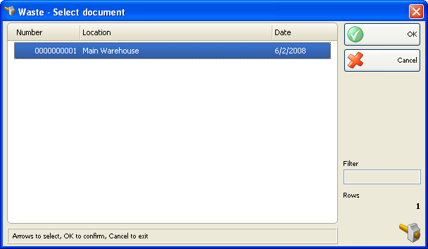
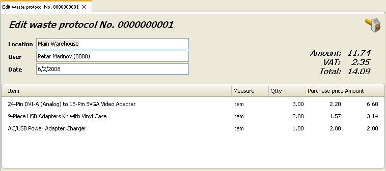

Editare si retiparire rebuturi
In fereastra Rebuturi � selectare document (shortcut taste Ctrl+F3) se poate selecta documentul pe care doriti sa-l editati sau sa-l tipariti dupa care confirmati
prin apasarea tastei OK
. 
Utilizati fereastra Editare rebut pentru a edita sau sterge rebuturi.

Campul Localizarea va permite editaera numelui localizarii de unde va fi preluat articolul. Puteti vizualiza lista apasand tasta F4.
Campul Utilizator va permite editarea numelui angajatului care a efectuat operatia. Apasand tasta F4 puteti vizualiza lista.
Campul� Articol va permite editarea numelui unui articol anumit. Apasand tasta F4 �puteti vizualiza lista. Pentru a adauga un articol nou, inserati o linie noua prin apasarea tastei ENTER.
Se poate introduce o valoare noua in campul Cant daca doriti sa modificati cantitatea curenta.
Pentru a sterge o inregistrare anume din document, modificati cantitata corespunzatoare cu zero. Pentru stergerea intregului document, modificati toate cantitatile cu valoarea zero.
Dublu click pe data documentului va permite modificarea datei. Se va deschide fereastra Calendar� care va permite selectarea unei alte date (prin dublu click pe data dorita sau prin apasarea tastei OK dupa selectarea datei dorite). Dup ace inchideti fereastra Calendar data selectata va aparea in fereastra Editare rebuturi.
Apasati tasta F9 pentru salvare document.
Se poate folosi fereastra Rebuturi � selectare document pentru retiparirea unei preluari de stoc deja efectuata.

�2006-2012 Microinvest, All rights reserved